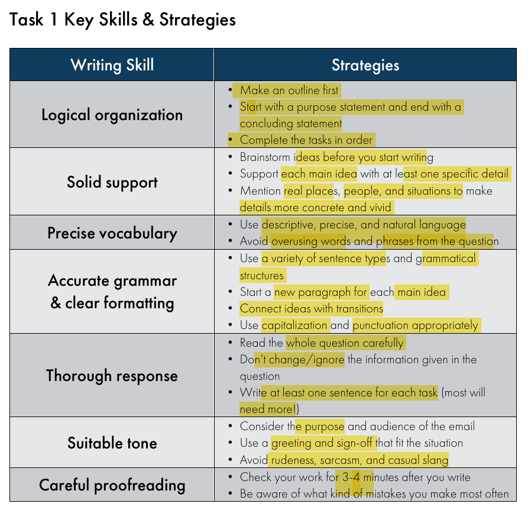

CELPIP
Notes are allowed in all sections.
Listening
Question Types:

Part1 - 3


Reading
Question Types

Part1 - Email


Part2 - Diagram with email


Part 3 - informational

- Read questions first.
- Read each single paragraph and put that paragraph to the correspond matching answer.

Part 4 - Opinions


- Read the questions and identify helpful keywords
- Read through the paragraph and try to see if an answer would appear
Writing
Task1



Task2
I strongly believe that extending library hours would benefit the public more than adding additional digital resources.
Currently, the library operates from 10 a.m. to 4 p.m., which is inconvenient for individuals who work full-time during weekdays. By extending the operating hours, more people would have the opportunity to use the library in the evenings for self-study and personal development.
Furthermore, I have observed that many people visit the library after lunchtime, often making it difficult to find seating. As the space becomes more crowded, the noise level also increases. Extended hours would help distribute visitor traffic more evenly throughout the day, easing congestion and creating a quieter, more productive atmosphere.
In conclusion, I strongly support the extension of library hours, as it would offer greater flexibility and allow more members of the community to benefit from a peaceful space to study, work, and relax.


Speaking
Task 1: Giving Advice
- Congrats
- Student Loan
- Scholarship
- Part time jobs
- Apply for summer internship

- Initiate a conversation about work
- Ask her out for a coffee
- Find common interests
Task 2: Talking about a Personal Experience

- Part time job - tutor younger
- Programming for grade 5 and 6 students
- Computer engineering degree and I like playing around with children
Task 3: Describing a Scene
Task 4: Making Predictions


Task 5: Comparing and Persuading


Task 6: Dealing with a Difficult Situation

Natural flows

Task 7: Expressing Opinions

Task 8: Describing an Unusual Situation